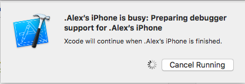

Fixing Xcode 9 issue: "iPhone is busy: Preparing debugger support for iPhone"
I'm looking for more information on the message below. Xcode 9 seems to be hanging for a couple minutes already...
How can I tell Xcode 9 to quickly recognize my previously used device updated to iOS 11?
.Alex’s iPhone is busy: Preparing debugger support for .Alex’s iPhone
Xcode will continue when .Alex’s iPhone is finished.

Answer
There are multiple solutions for this:
Solution 1: Patiently wait for 10 to 15 minutes. Have a tea or roam around ;-)
Solution 2: Disconnect device from the system. Restart both iPhone and Xcode and then rebuild again.
Solution 3:
- Go to Windows → Devices and Simulators (Shortcut key: cmd+shift+2)
- You’ll see iPhone device connected to system with message
iPhone is busy: Preparing debugger support for iPhone
- Click on plus button (+) present in bottom-left corner.
- This will show the device connected to system. Click on Next button.
- Thereafter you’ll see ‘device setup was successful’. Click on Done button.
Solution 3 worked for me!
Solution 4:
Unpair your device and then pair it again. Thereafter follow Step 3.
Suggest
I clicked ‘Cancel Running’, opened the Devices list, unpaired my iPhone, removed my USB cable and reconnected it, paired the iPhone, and then was asked on my iPhone to enter my passcode ("pin code"). Did this and then was finally able to pair my phone correctly.